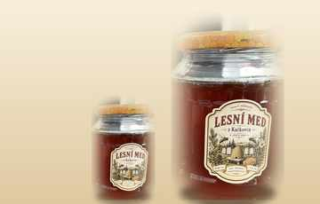

250 g
Na vyzkoušení nebo pro jednoho
95 Kč
Poctivý lesní med od maringotky u Kačkovského potoka
Láda chová včely na kraji lesa u Kačkovského potoka na jižní Moravě. Přes sezónu bydlí v maringotce, jen pár kroků od úlů.
Místo u Kačkovce si vybral v roce 2022 – ne kvůli výhledu, ale kvůli tomu, co roste kolem. Smrky, jedle, akáty a lípy, a mezi nimi úzký pramen, kterému se tu odjakživa říká Kačkovský potok.
Když se ráno probudí, první věc, kterou slyší, není budík, ale bzukot. Když prší, poslouchá kapky na plechové střeše a přemýšlí, jestli se všechny včely stihly vrátit domů.
Med se netočí podle kalendáře, ale podle počasí a snůšky. Někdy ho je málo, někdy víc – ale vždycky jen jeden druh, z jednoho místa, bez míchání šarží.


Lesní med z Kačkovca – nepasterizovaný, neředěný, přímo z Ládových úlů. Jedna snůška, tři velikosti sklenic.
Na vyzkoušení nebo pro jednoho
95 Kč
Sklenice na běžné týdny
180 Kč
Pro celou rodinu nebo na zásobu
340 Kč
Ceny jsou orientační, podle aktuální snůšky se mohou v průběhu sezóny mírně měnit.
Včely z Kačkovce létají po okolním lese – smrcích, jedlích, akátech a lípách. Proto je med tmavší a plnější chuti než běžný květový med z obchodu. Každá sklenice pochází z jedné snůšky, šarže se nemíchají.
Co vyteče z medometu, to skončí ve sklenici. Med se nezahřívá ani neředí, takže si zachová chuť i vůni, jakou mu daly včely. Láda ho jen nechá uležet a naplní do sklenic.
Přírodní med časem zhoustne a zkrystalizuje – je to znak, že nebyl zahříván. Pokud ho chcete znovu tekutý, postavte sklenici do vlažné vodní lázně (do 40 °C) a nechte ho pomalu rozpustit.
Uzavřený, v suchu a ve tmě, ideálně při pokojové teplotě. Med nepatří do lednice ani na slunce. Dětem do jednoho roku se med nepodává.
Včely na kraji lesa pracují celou sezónu.
Láda jejich práci jen stočí do sklenic – a pošle ji až k vám.
Kačkovec, jižní Morava
u Kačkovského potoka
kontakt@doplnit.cz
+420 000 000 000
Doplňte prosím skutečný telefon a e-mail.

123456 7890 / 0300
Ukázkové číslo účtu – nahraďte skutečným účtem Lády.